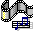

|
Ok, I know that Winamp is generally not used to play midi's however, on Ashashua it is!! You can even download your very own Ashashuaian winamp skin! This skin was a pain in the arse to make, and I will never attempt to do this kind of work again! |
Welcome!!!
You are at Ashashua's musical arts page!! Here, you will get to listen to Ashashua's greatest hits. The music here is Super Bon Bon!!!! Just click on the midi's below!

#10-----------Trial
#9------------Mana
#8------------Better get Mako!
#7------------Underwater
#6------------Overworld
#5------------ Bad guy hehe
#4------------Magnetremix
#3------------Cool Bad Guy
#2------------Awesome Theme
#1------------????????
(this page does not contain background music because then.....it would be too confusing, and only Ashashuaians are allowed to do that ... SOMETIMES...only when the humidity is bad)
Galderian 51 Archive — Supplemental Filing: Musical Arts Division
Re: The above disclaimer
The Archive acknowledges the above policy and notes that it was composed during a period of significantly different atmospheric conditions. Rainfall this season has been, by every available measurement, incredible. The humidity is, in fact, extremely bad. The Archive has provisionally approved background music for this page on those grounds. These two facts are not unrelated. The Archive takes no further position on this matter.
|
Ok, I know that Winamp is generally not used to play midi's however, on Ashashua it is!! You can even download your very own Ashashuaian winamp skin! This skin was a pain in the arse to make, and I will never attempt to do this kind of work again! |
Do you have a special musical request? Just send E-Mail to Ashashua, and if it sounds Ashashuaian it may become a new hit!

![[Ashashua Winamp skin preview - image not recovered]](images/skin.jpg)